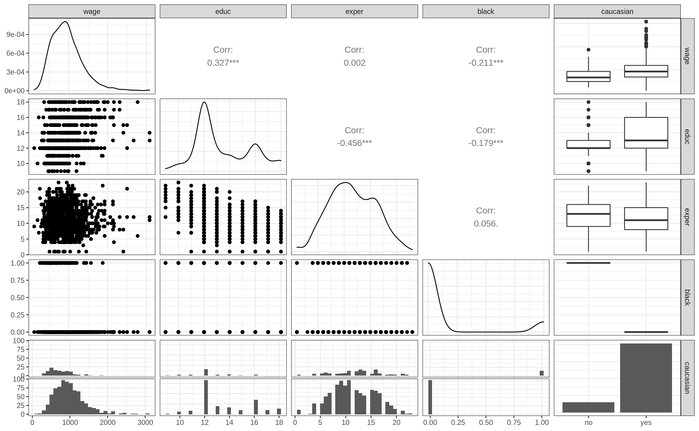
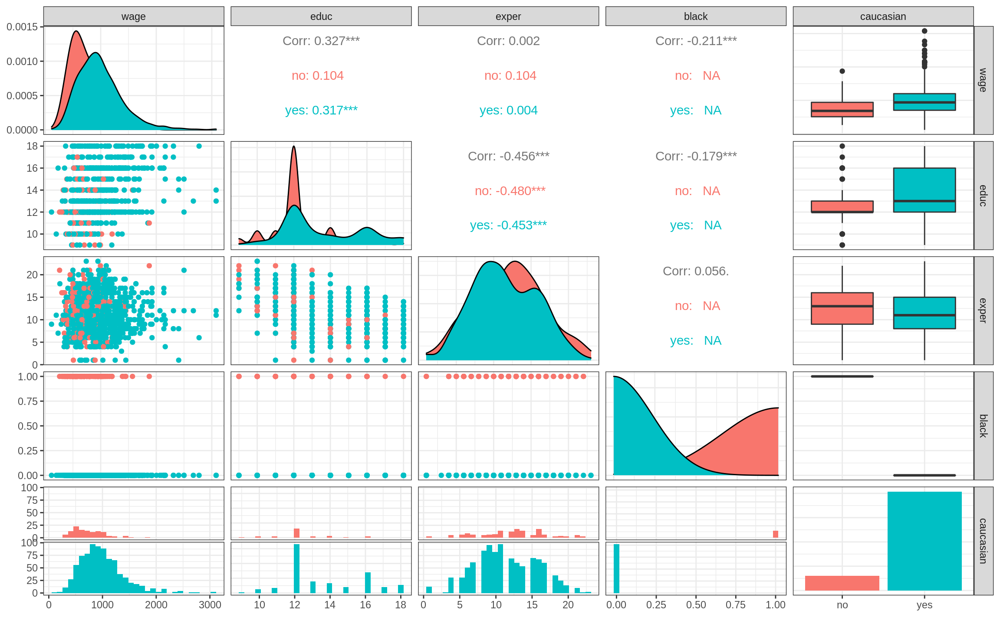
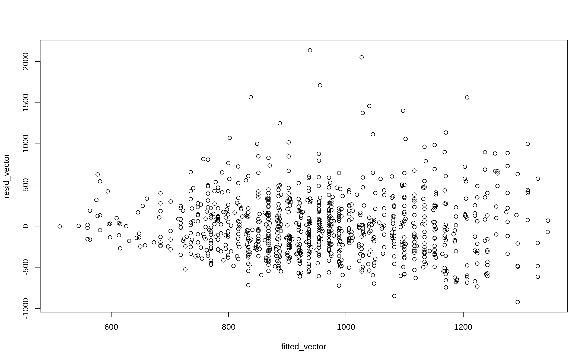
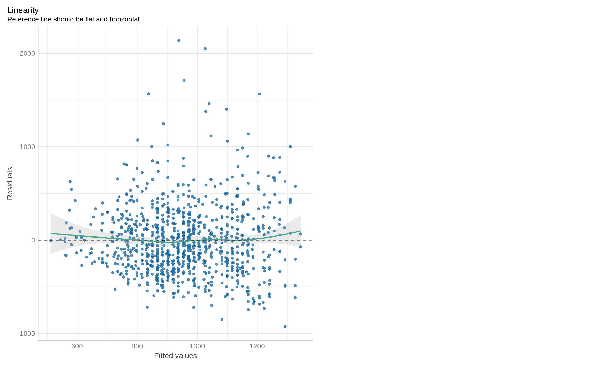
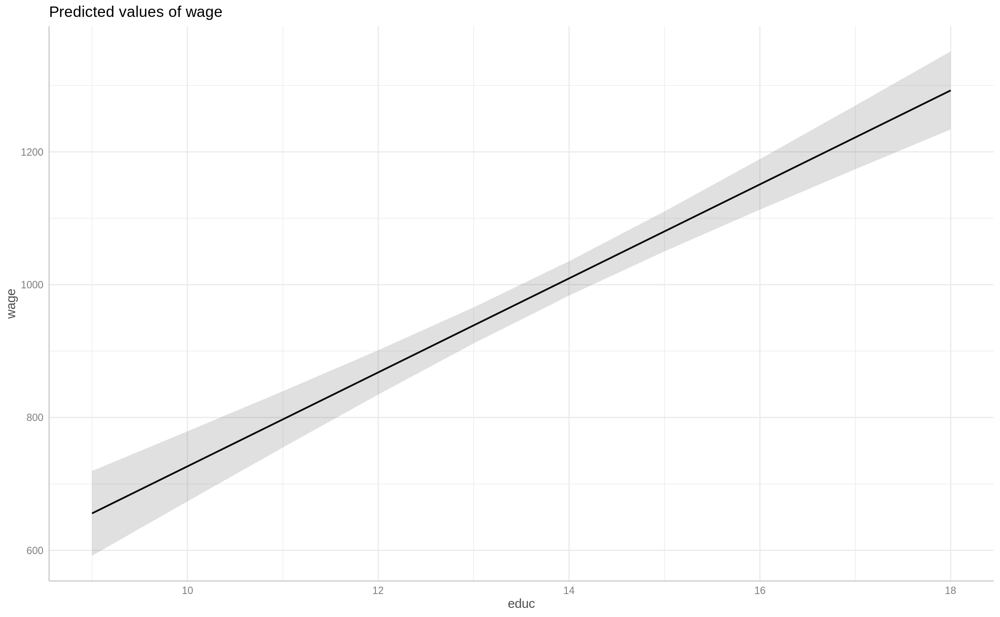
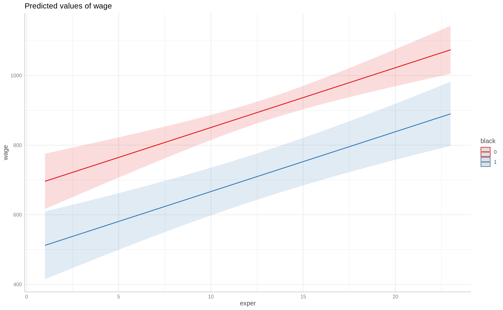

library(tidyverse)
library(wooldridge)
library(modelsummary)
library(GGally)
library(parameters)
library(performance)
library(see)
library(patchwork)
library(ggeffects)
ggplot2::theme_set(ggplot2::theme_bw())
knitr::opts_chunk$set(
fig.width = 12,
fig.asp = 0.618,
out.width = "100%"
)AE04-01 Multiple Linear Regression
Setup
Goals
- Fit multiple linear regression;
- Display and interpret regression summary;
- Compute fitted values and residuals;
Data
We use data from (Blackburn and Neumark, 1992) on wage determinants. Variables present are:
- \(wage\) - monthly earnings in USD;
- \(educ\) - years of education;
- \(exper\) - years of experiences;
- \(black\) - dummy variable representing individuals which are not Caucasian;
See: Blackburn, M. and Neumark, D. (1992) Unobserved Ability, Efficiency Wages, and Interindustry Wage Differentials. The Quarterly Journal of Economics , Vol. 107, No. 4. Oxford University Press (OUP). p. 1421-1436
wage_dta <-
wooldridge::wage2 %>%
as_tibble() %>%
select(wage, educ, exper, black)Ex. 1. Glimpse at the data
# __________(_____)Compute a new variables caucasian that takes values “yes” and “no” for each person depending on the values of the variable black.
# wage_dta <-
# _____ %>%
# mutate(_____ = ifelse(black, "no", "yes"),
# caucasian = as.factor(caucasian))
# glimpse(_____)Ex. 1.2. Descriptive statistics
Use function datasummary_skim() from the package modelsummary.
# library(_________)
# _________(wage_dta)Ex. 2.3. Visual data inspection
We inspect data visually by building a grid of scatter plots using GGally::ggpairs()
# library(_________)
# _________(wage_dta)Add parameter aes(colour = caucasian) to ggpairs().
What is the difference compare to the previous plot?
# ggpairs(_________, _________)Ex. 2. Fit regressions
Dependent variable is wage, independent are: educ, exper and black
# fit1 <- lm(____ ~ ____ + ____ + ____, data = ____)
# fit1Ex. 2.1. Print regression results
# fit1Ex. 3 Regression summary
# summary(______)Interpret the coefficients:
Ex. 2.1 Regression summary using parameters::parameters()
Check help on ?parameters::parameters
# library(________)
# ________(________)Ex. 2.2. Goodness of fit using performance::performance()
Check help on ?performance::performance
# library(________)
# performance(________)Ex. 4. Fitted
# fitted_vector <- fitted(________)
# fitted_vector[1:20]Ex. 5. Residuals
# resid_vector <- resid(________)
# resid_vector[1:20]Ex. 6. Residuals vs fitted plot
Use function plot(). Put fitted as an x argument and residuals as y.
# plot(x = _____, ___ = ________)Ex. 6.1 Residuals vs fitted using check_model from performance package
See: ?performance::check_model
# check_model(fit1, check = "linearity")Ex. 7 Predicting values using regression
We can compute predicted values based on the regression results for arbitrary values of \(X\). See: ?predict
First, we need to make a table the \(X\) variables for which we want compute the predicted value.
- Variables names in table should match the variables in the regression.
Let us predict wage for a person with 0 years of education, 0 experience, when he/she is white.
# pred1 <-
# tibble(educ = 0,
# exper = 0,
# black = 0)
# predict(fit1, pred1)The same when the person is black.
# pred2 <-
# tibble(educ = c(0, 0),
# exper = c(0, 0),
# black = c(0, 1)
# )
# predict(fit1, pred2)Ex 7.1 Writing predicted values to a data frame
Use mutate to mutate new variable in a data frame:
# pred3 <-
# tibble(educ = c(0, 0, 10),
# exper = c(0, 0, 25),
# black = c(0, 1, 1)
# )
#
# pred3 %>%
# mutate(predicted = predict(fit1, pred3))Ex 7.2 Visual inspection of predicted values
We can use function ggeffects::ggpredict(), check help.
# library(ggeffects)
# ggpredict(fit1, term = "educ")We can also plot this effects using plot after ggpredict
# ggpredict(fit1, term = "educ") %>% ________()Compute predicted values for a different independent variable and a dummy variable
# ggpredict(fit1, term = c("________", "________"))
# ________(________, term = c("________", "________")) %>% plot()Solutions
Code
library(tidyverse)
library(wooldridge)
wage_dta <-
wooldridge::wage2 %>%
as_tibble() %>%
select(wage, educ, exper, black)
glimpse(wage_dta)Rows: 935
Columns: 4
$ wage <int> 769, 808, 825, 650, 562, 1400, 600, 1081, 1154, 1000, 930, 921, …
$ educ <int> 12, 18, 14, 12, 11, 16, 10, 18, 15, 12, 18, 14, 15, 16, 16, 10, …
$ exper <int> 11, 11, 11, 13, 14, 14, 13, 8, 13, 16, 8, 9, 4, 7, 9, 17, 6, 19,…
$ black <int> 0, 0, 0, 0, 0, 1, 0, 0, 0, 0, 0, 0, 0, 0, 0, 0, 0, 0, 0, 0, 0, 0…Code
wage_dta <-
wage_dta %>%
mutate(caucasian = ifelse(black, "no", "yes"),
caucasian = as.factor(caucasian))
glimpse(wage_dta)Rows: 935
Columns: 5
$ wage <int> 769, 808, 825, 650, 562, 1400, 600, 1081, 1154, 1000, 930, 9…
$ educ <int> 12, 18, 14, 12, 11, 16, 10, 18, 15, 12, 18, 14, 15, 16, 16, …
$ exper <int> 11, 11, 11, 13, 14, 14, 13, 8, 13, 16, 8, 9, 4, 7, 9, 17, 6,…
$ black <int> 0, 0, 0, 0, 0, 1, 0, 0, 0, 0, 0, 0, 0, 0, 0, 0, 0, 0, 0, 0, …
$ caucasian <fct> yes, yes, yes, yes, yes, no, yes, yes, yes, yes, yes, yes, y…Code
library(modelsummary)
datasummary_skim(wage_dta)| Unique (#) | Missing (%) | Mean | SD | Min | Median | Max | ||
|---|---|---|---|---|---|---|---|---|
| wage | 449 | 0 | 957.9 | 404.4 | 115.0 | 905.0 | 3078.0 | |
| educ | 10 | 0 | 13.5 | 2.2 | 9.0 | 12.0 | 18.0 | |
| exper | 22 | 0 | 11.6 | 4.4 | 1.0 | 11.0 | 23.0 | |
| black | 2 | 0 | 0.1 | 0.3 | 0.0 | 0.0 | 1.0 |
Code
library(GGally)
ggpairs(wage_dta)`stat_bin()` using `bins = 30`. Pick better value with `binwidth`.
`stat_bin()` using `bins = 30`. Pick better value with `binwidth`.
`stat_bin()` using `bins = 30`. Pick better value with `binwidth`.
`stat_bin()` using `bins = 30`. Pick better value with `binwidth`.
Code
ggpairs(wage_dta, aes(colour = caucasian))Warning in cor(x, y): the standard deviation is zero
Warning in cor(x, y): the standard deviation is zero
Warning in cor(x, y): the standard deviation is zero
Warning in cor(x, y): the standard deviation is zero
Warning in cor(x, y): the standard deviation is zero
Warning in cor(x, y): the standard deviation is zero`stat_bin()` using `bins = 30`. Pick better value with `binwidth`.
`stat_bin()` using `bins = 30`. Pick better value with `binwidth`.
`stat_bin()` using `bins = 30`. Pick better value with `binwidth`.
`stat_bin()` using `bins = 30`. Pick better value with `binwidth`.
Code
fit1 <- lm(wage ~ educ + exper + black, data = wage_dta)
fit1
Call:
lm(formula = wage ~ educ + exper + black, data = wage_dta)
Coefficients:
(Intercept) educ exper black
-170.23 70.77 17.18 -183.98 Code
summary(fit1)
Call:
lm(formula = wage ~ educ + exper + black, data = wage_dta)
Residuals:
Min 1Q Median 3Q Max
-923.57 -250.05 -35.42 195.94 2139.28
Coefficients:
Estimate Std. Error t value Pr(>|t|)
(Intercept) -170.225 107.893 -1.578 0.115
educ 70.769 6.313 11.210 < 2e-16 ***
exper 17.178 3.124 5.499 4.92e-08 ***
black -183.984 36.948 -4.980 7.59e-07 ***
---
Signif. codes: 0 '***' 0.001 '**' 0.01 '*' 0.05 '.' 0.1 ' ' 1
Residual standard error: 371.6 on 931 degrees of freedom
Multiple R-squared: 0.1583, Adjusted R-squared: 0.1556
F-statistic: 58.35 on 3 and 931 DF, p-value: < 2.2e-16Code
library(parameters)
parameters(fit1)Parameter | Coefficient | SE | 95% CI | t(931) | p
-------------------------------------------------------------------------
(Intercept) | -170.23 | 107.89 | [-381.97, 41.52] | -1.58 | 0.115
educ | 70.77 | 6.31 | [ 58.38, 83.16] | 11.21 | < .001
exper | 17.18 | 3.12 | [ 11.05, 23.31] | 5.50 | < .001
black | -183.98 | 36.95 | [-256.49, -111.47] | -4.98 | < .001
Uncertainty intervals (equal-tailed) and p-values (two-tailed) computed
using a Wald t-distribution approximation.Code
library(performance)
performance(fit1)# Indices of model performance
AIC | BIC | R2 | R2 (adj.) | RMSE | Sigma
-------------------------------------------------------------
13725.631 | 13749.834 | 0.158 | 0.156 | 370.785 | 371.581Code
fitted_vector <- fitted(fit1)
fitted_vector[1:20] 1 2 3 4 5 6 7 8
867.9558 1292.5693 1009.4937 902.3111 848.7198 1018.5808 760.7732 1241.0364
9 10 11 12 13 14 15 16
1114.6179 953.8440 1241.0364 975.1384 960.0191 1082.3209 1116.6762 829.4838
17 18 19 20
994.3744 934.6080 889.2502 902.3111 Code
resid_vector <- resid(fit1)
resid_vector[1:20] 1 2 3 4 5 6 7
-98.95581 -484.56934 -184.49366 -252.31109 -286.71981 381.41917 -160.77325
8 9 10 11 12 13 14
-160.03642 39.38214 46.15599 -311.03642 -54.13838 -60.01910 235.67906
15 16 17 18 19 20
675.32378 128.51619 365.62562 -84.60801 -59.25017 -431.31109 Code
plot(x = fitted_vector, y = resid_vector)
Code
check_model(fit1, check = "linearity")
Code
pred1 <-
tibble(educ = 0,
exper = 0,
black = 0)
predict(fit1, pred1) 1
-170.2253 Code
pred2 <-
tibble(educ = c(0, 0),
exper = c(0, 0),
black = c(0, 1)
)
predict(fit1, pred2) 1 2
-170.2253 -354.2089 Code
pred3 <-
tibble(educ = c(0, 0, 10),
exper = c(0, 0, 25),
black = c(0, 1, 1)
)
pred3 %>%
mutate(predicted = predict(fit1, pred3))# A tibble: 3 × 4
educ exper black predicted
<dbl> <dbl> <dbl> <dbl>
1 0 0 0 -170.
2 0 0 1 -354.
3 10 25 1 783.Code
library(ggeffects)
ggpredict(fit1, term = "educ")# Predicted values of wage
educ | Predicted | 95% CI
-------------------------------------
9 | 655.65 | [ 591.81, 719.49]
10 | 726.42 | [ 673.67, 779.16]
11 | 797.19 | [ 754.83, 839.55]
12 | 867.96 | [ 834.59, 901.32]
14 | 1009.49 | [ 983.63, 1035.36]
15 | 1080.26 | [1050.16, 1110.37]
16 | 1151.03 | [1112.96, 1189.11]
18 | 1292.57 | [1233.79, 1351.35]
Adjusted for:
* exper = 11.00
* black = 0.00Code
ggpredict(fit1, term = "educ") %>% plot()
Code
ggpredict(fit1, term = c("exper", "black"))# Predicted values of wage
# black = 0
exper | Predicted | 95% CI
--------------------------------------
1 | 696.18 | [ 616.64, 775.72]
5 | 764.89 | [ 707.08, 822.70]
8 | 816.42 | [ 772.95, 859.90]
12 | 885.13 | [ 853.45, 916.82]
16 | 953.84 | [ 917.55, 990.14]
23 | 1074.09 | [1005.16, 1143.02]
# black = 1
exper | Predicted | 95% CI
------------------------------------
1 | 512.20 | [414.77, 609.62]
5 | 580.91 | [499.60, 662.22]
8 | 632.44 | [560.06, 704.82]
12 | 701.15 | [634.39, 767.91]
16 | 769.86 | [700.03, 839.69]
23 | 890.10 | [797.94, 982.26]
Adjusted for:
* educ = 12.00Code
ggpredict(fit1, term = c("exper", "black")) %>% plot()